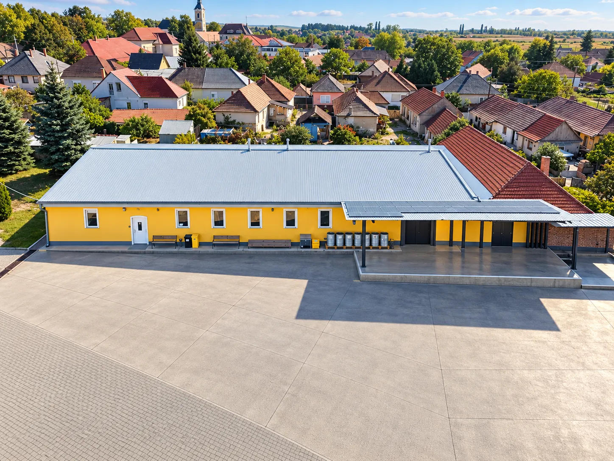

Machinery
50 machines on one site
CNC automatic lathes, twin-turret sub-spindle lathes and vertical machining centres – INDEX, STAR, Mori Seiki, Nakamura, Takisawa, Akira Seiki, OKK and Bridgeport machines with Fanuc, Heidenhain, Mitsubishi and Sinumerik controls, complemented by NC and conventional machines.
- CNC lathes
- 24
- Machining centres
- 11
- NC lathes
- 5
- Conventional
- 8

50 machines
| Model | Type | Control | qty |
|---|---|---|---|
| CNC automatic lathes 15 units | |||
| INDEX GS30 | twin-turret automatic lathe with sub-spindle | Sinumerik C200 | 1 |
| STAR SA 12 | automatic lathe | Fanuc 18i-T | 2 |
| STAR SB 16 | automatic lathe | Fanuc 18i-TB | 1 |
| STAR SR 16 | automatic lathe | Fanuc 16T | 2 |
| STAR SR 20 | automatic lathe | Fanuc 16-TT | 3 |
| STAR SB 20 | automatic lathe | Fanuc 0i-TF | 3 |
| STAR SR 32 JII | automatic lathe | Fanuc 32i | 1 |
| STAR SR 32 J | automatic lathe | Fanuc 18i-TB | 2 |
| CNC lathes 9 units | |||
| Mori Seiki ZL 15 | twin-turret lathe with C-axis and sub-spindle | Fanuc 0-TT | 1 |
| Mori Seiki ZL 25 | twin-turret lathe | Fanuc 15-TT | 1 |
| Nakamura TW10 | twin-turret lathe with C-axis and sub-spindle | Fanuc | 3 |
| Nakamura TW20 | twin-turret lathe with C-axis and sub-spindle | Fanuc | 1 |
| Takisawa NEX108 | CNC lathe | Fanuc | 1 |
| Takisawa NEX108Y | CNC lathe, Y-axis | Fanuc | 1 |
| Takisawa EX910 | CNC lathe | Fanuc | 1 |
| CNC machining centres 11 units | |||
| Bridgeport Interact INT720H | vertical machining centre | Heidenhain TNC2500 | 1 |
| Bridgeport Interact VMC 760/22 | vertical machining centre | Heidenhain TNC355 | 1 |
| Bridgeport Interact VMC1000 3D | vertical machining centre | Heidenhain TNC355 | 1 |
| Mori Seiki SV403 | vertical machining centre | Fanuc | 1 |
| OKK MCV-410 | vertical machining centre | Fanuc | 1 |
| Akira Seiki SV1350 | vertical machining centre | Mitsubishi | 1 |
| Akira Seiki SR42 XP | vertical machining centre | Mitsubishi | 1 |
| Akira Seiki V4 XP | vertical machining centre | Mitsubishi | 2 |
| Akira Seiki RMV 650 | vertical machining centre | Mitsubishi | 1 |
| Akira Seiki RMV 700 | vertical machining centre | Mitsubishi | 1 |
| NC centre lathes 5 units | |||
| EEN400 | centre lathe | Hunor PNC721 | 3 |
| EEN320 | centre lathe | Hunor PNC721 | 1 |
| EEN630 | centre lathe | Hunor PNC721 | 1 |
| Sawing machines 2 units | |||
| Bomar STG 240 GA | NC band saw | NC | 1 |
| Forte BA-251 | band saw | – | 1 |
| Conventional machines 8 units | |||
| E3N-01 | centre lathe | – | 2 |
| Kraszny Proletar | centre lathe | – | 1 |
| FNGJ 32 | tool milling machine | – | 1 |
| FUS 22 | milling machine with slotting head | – | 1 |
| EZ 45-2 | column drilling machine | – | 1 |
| MM 435 | cylindrical grinder | – | 1 |
| TOS AT420 | surface grinder | – | 1 |
No machines match your search.
Site · Upper plant
The upper plant – home of our turned parts
Most of our machine park works in the upper plant. This is where the STAR Swiss-type lathes and automatic lathes run: bar stock becomes finished, deburred and measured parts – in large series, in 3 shifts.
- STAR Swiss-type lathes
- 14
- bar diameter, mm
- 4–35
- shifts
- 3
- control
- Fanuc
- STAR SA 12, SB 16, SR 16, SR 20, SB 20, SR 32 J and SR 32 JII automatics
- Bar-fed, supervised continuous production
- Covered goods-in and dispatch area right next to the hall

Plant
Inside our production